New Series!
Bocchi The Rock
Cast:
Hitori Gotou, Ryou Yamada, Nijika Ijichi, Ikuyo Kita
Creator:
Cloverworks
Synopsis
Hitori Gotou, “Bocchi-chan,” is a girl who’s so introverted and shy around people that she’d always start her conversations with “Ah...”During her middle school years, she started playing the guitar, wanting to join a band because she thought it could be an opportunity for even someone shy like her to also shine. But because she had no friends, she ended up practicing guitar for six hours every day all by herself. After becoming a skilled guitar player, she uploaded videos of herself playing the guitar to the internet under the name “Guitar Hero” and fantasized about performing at her school’s cultural festival concert. But not only could she not find any bandmates, before she knew it, she was in high school and still wasn’t able to make a single friend! She was really close to becoming a shut-in, but one day, Nijika Ijichi, the drummer in Kessoku Band, reached out to her. And because of that, her everyday life started to change little by little...
Episodes
1
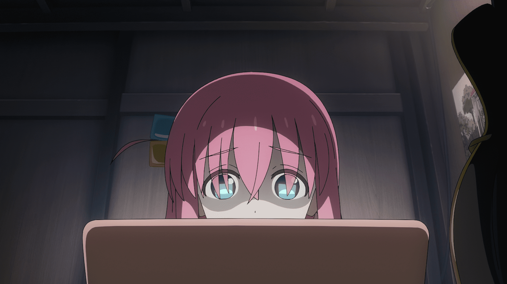
Lonely Rolling Bocchi (23m)
Shy loner Hitori practices guitar in hopes of being in a band. One day after school, a drummer asks her to temporarily fill in with her group.
2
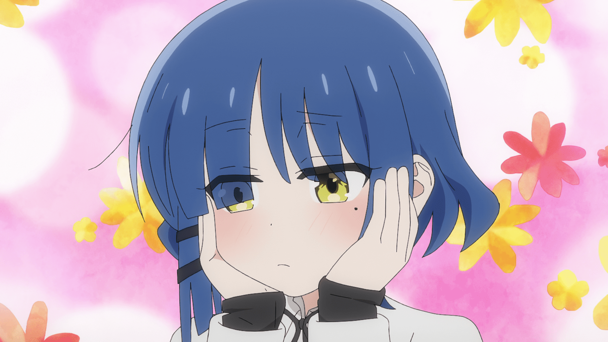
See You Tomorrow (23m)
In a bid to make enough money to cover the ticket quota for their next performance, Hitori’s bandmates convice her to work with them at Starry.
3
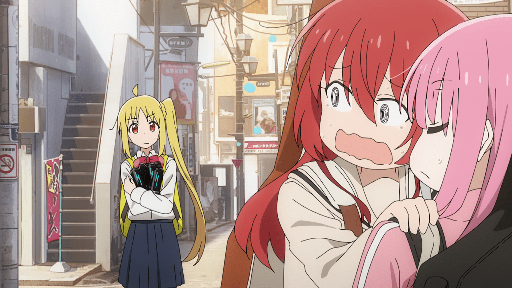
Be Right There (23m)
After remembering that her band is looking for another member, Hitori tries to work up the courage to approach a popular, multitalented schoolmate.
4
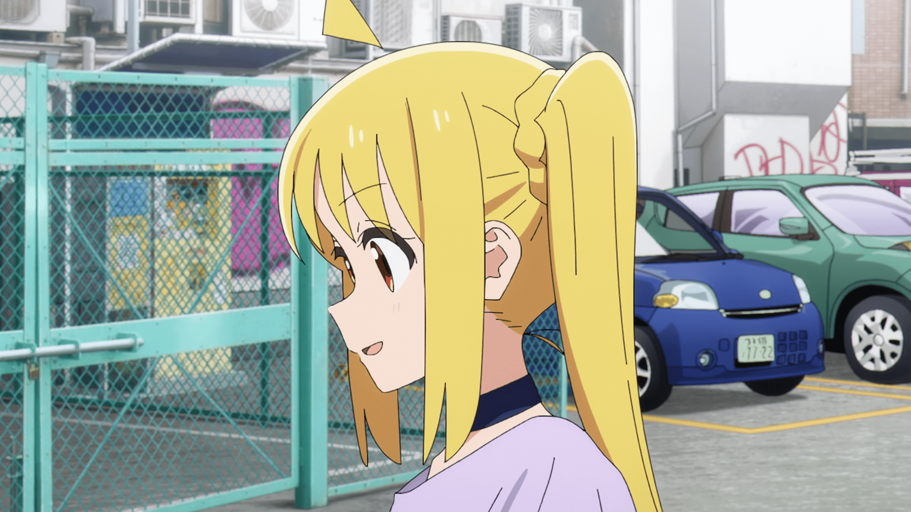
Jumping Girl(s) (23m)
Now a four-piece, the band starts its activities in earnest. Hitori struggles to write appropriate lyrics for a song that Ryo will compose.
5
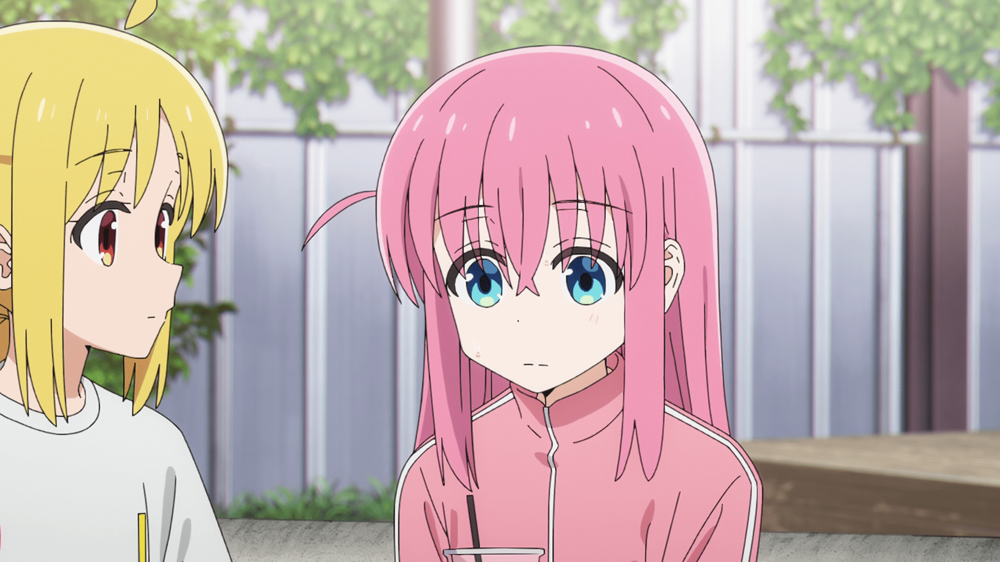
Flightless Fish (23m)
With Ryo's song complete, the girls feel ready to play a show. Nijika asks her sister to book them a slot, but she insists that they audition first.
6
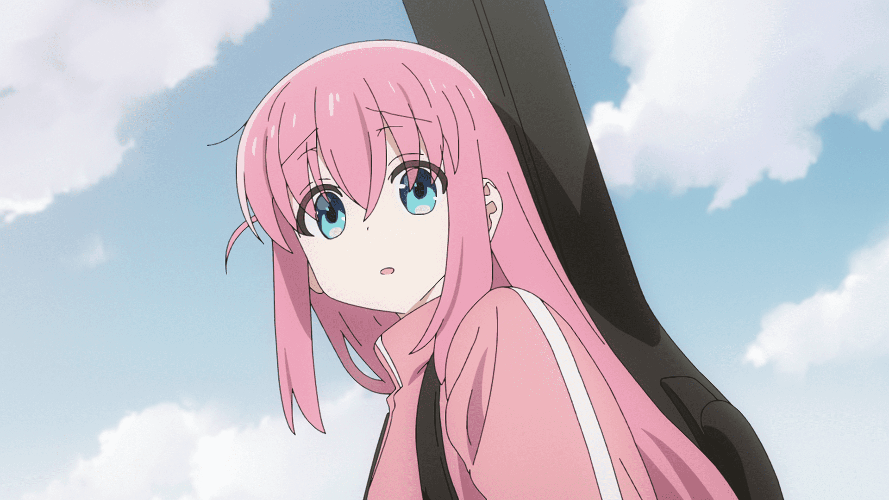
Eight Views (23m)
Hitori must somehow sell five tickets for her band's upcoming performance. While trying to distribute flyers, she encounters a very hungover woman.
7
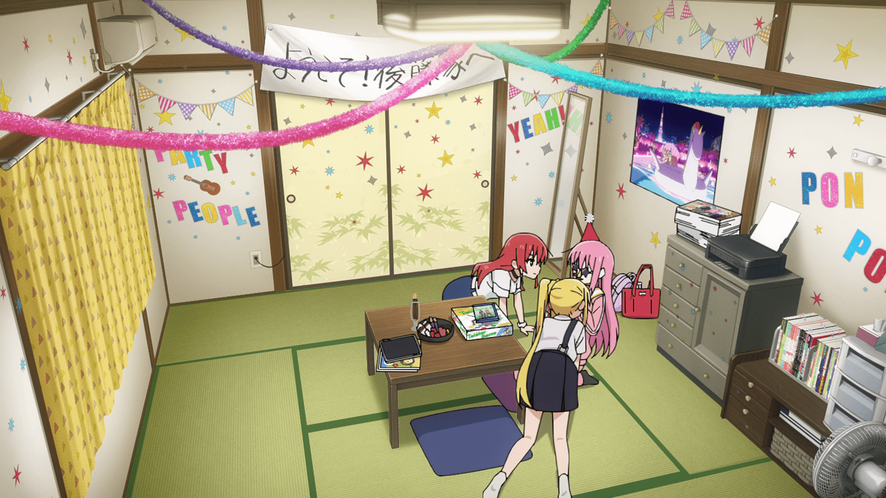
To Your House (23m)
Kita and Nijika go to Hitori's house to design T-shirts to wear for the band's gig. Hitori tries her best to play host for the first time.
8
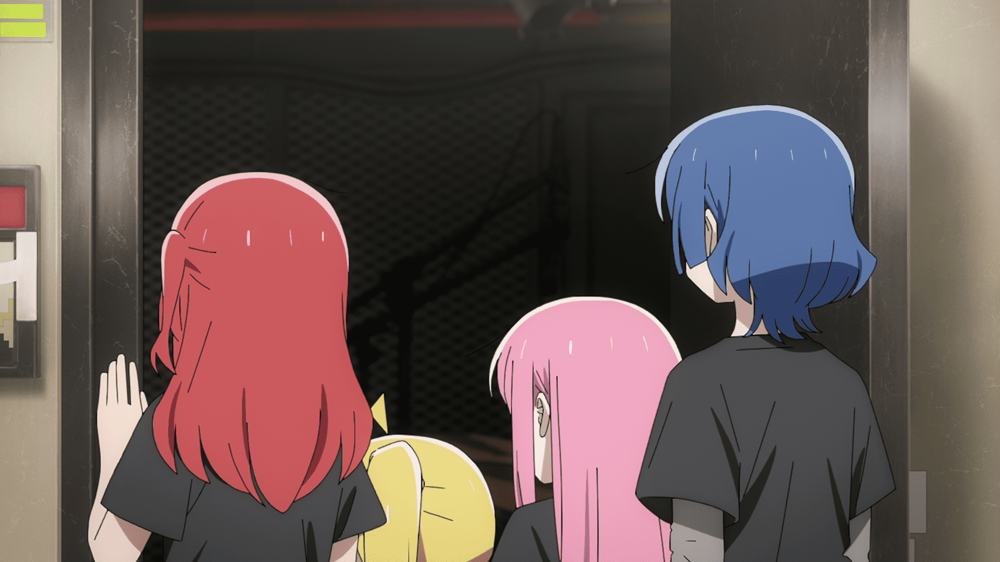
Bocchi the Rock (23m)
A typhoon forces many of the girls' friends and family members to cancel their plans to come to the show. Kessoku Band begins playing to a tiny crowd.
9
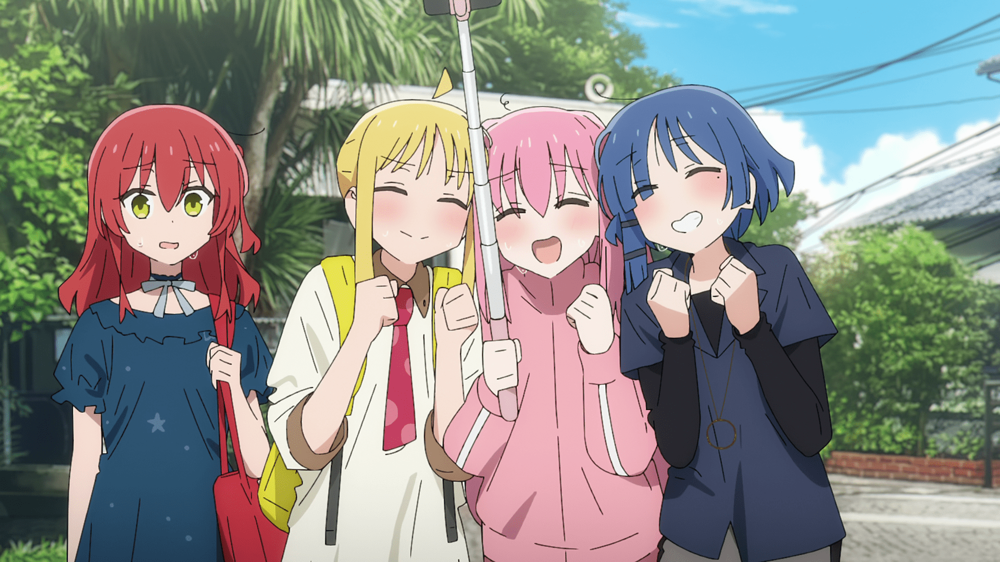
Enoshima Escar (23m)
Wishing her bandmates would invite her out, a forlorn Hitori spends most of her summer vacation doing nothing. Kita suggests a trip to the beach.
10
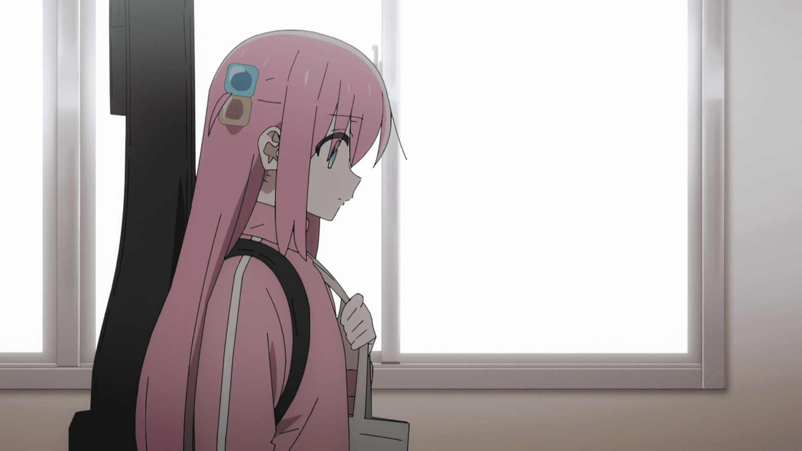
After Dark (23m)
Hitori wants to play on stage with Kessoku Band at her school's festival, but she's torn between her desire for attention and her fear of failure.
11
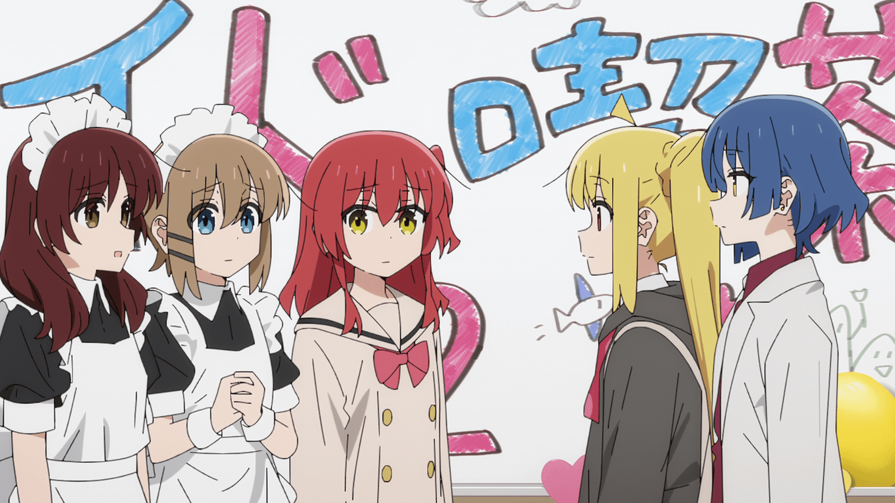
Duodecimal Sunset (23m)
After finding Hitori, the girls enjoy the various classroom booths at the cultural festival. Later, they rehearse for the next day's performance.
12
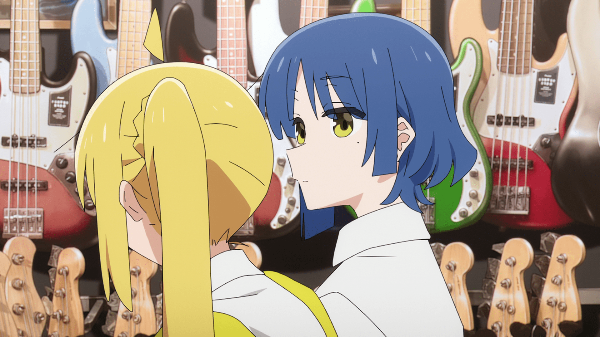
Morning Light Falls on You (23m)
The crowd is thrilled by the first song in Kessoku Band's set, but Hitori breaks a string shortly before her guitar solo in the second tune.